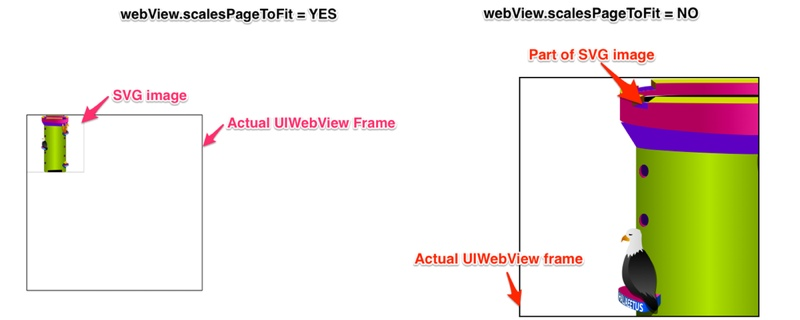
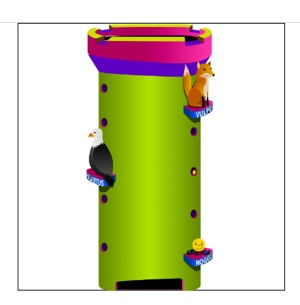

I'm currently working on one interesting project - quizzes app for iPhone and iPad. There are a lot of interesting quizzes I had to solve during development, but I want to admit one of them - displaying SVG images on iOS.
What is SVG image
A few words about SVGFrom Wikipedia
Scalable Vector Graphics (SVG) is an XML-based vector image format for two-dimensional graphics with support for interactivity and animation. The SVG specification is an open standard developed by the World Wide Web Consortium (W3C) since 1999.
SVG images and their behaviors are defined in XML text files. This means that they can be searched, indexed, scripted, and compressed. As XML files, SVG images can be created and edited with any text editor, but are more often created with drawing software.
Problem
There is also opensource libary for rendering SVG images using CoreAnimation - SVGKit - but after building it I realized that size of binary is twice more then app binary. So, I decided to continue using UIWebView for rendering SVG images.
But, here are examples of problem :

UIWebView can't scale SVG image correctly, even set scalesPageToFit to YES.
Solution
Solution I found - is to correct web view's scroll view scale properties to fit web view bounds.
- (void)webViewDidFinishLoad:(UIWebView *)webView
{
CGSize contentSize = webView.scrollView.contentSize;
CGSize webViewSize = webView.bounds.size;
CGFloat scaleFactor = webViewSize.width / contentSize.width;
webView.scrollView.minimumZoomScale = scaleFactor;
webView.scrollView.maximumZoomScale = scaleFactor;
webView.scrollView.zoomScale = scaleFactor;
}
And do not forget to set webView.scalesPageToFit = NO;.
That's it - SVG images rendering without issues.
